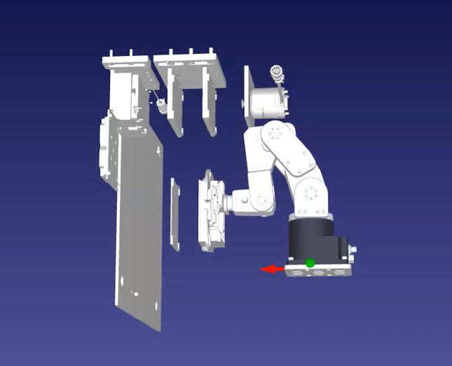

01
OpenCV Robot Camera Perception
Developed a camera-based perception system using OpenCV to detect and locate a plate, calculate its position relative to the robot, and control the robot arm to move to and grip the object.
View ProjectROBOTICS ENGINEER

ABOUT
I'm a Robotics Engineer with 5+ years experience designing and deploying autonomous robotic systems. My work spans robotics, automation, hardware integration, software, controls, networking, validation, and field deployment.
I enjoy working at the intersection of hardware and software and taking systems from an engineering concept through integration, commissioning, and production.
FEATURED WORK
01
Developed a camera-based perception system using OpenCV to detect and locate a plate, calculate its position relative to the robot, and control the robot arm to move to and grip the object.
View Project
02
Developed tool that reads user-defined pick-and-place targets, constructs a free-space graph, applies A* search to generate candidate trajectories, and uses RoboDK inverse kinematics and collision checking to validate robot paths. Validated trajectories are used to automatically generate robot teachpoints and motion programs.
View Project
03
Developed a sensor-driven robotic control system using a BNO055 IMU sensor, Raspberry Pi, and MQTT communication to adjust a robot arm's orientation using real-time sensor feedback.
View Project
04
Automated networking and hardware deployment workflows, reducing deployment time by 90%.
EDUCATION
Master of Science in Mechanical Engineering (Robotics) · December 2020
New York, NY
Bachelor of Science in Mechanical Engineering · June 2019
Philadelphia, PA
EXPERIENCE
Robotics Engineer · 2021–Present
Designed and deployed robotic automation systems for external customers, integrating robot arms, laboratory instruments, software, controls, networking, and material handling systems.
Led system commissioning, acceptance testing, customer deployments, troubleshooting, and cross-functional engineering efforts.
Robotics Intern · September 2020 – January 2021
Configured and integrated industrial robotic systems, including motor controls, encoders, and sensor hardware such as IMUs and LiDAR.
Developed Python-based robot control interfaces and supported real-time robotic arm simulation.
Performed field testing and troubleshooting to resolve issues before deployment.
Robotics Teaching Assistant · Jun 2020 – Dec 2020
New York, NY
Mentored students in designing and programming robotic systems using Raspberry Pi, motor controllers, and 3D-printed components.
Supported development of robotics simulations and computer vision projects using OpenCV and PyTorch.
Instrumentation Engineer Intern · Jul 2020 – Sep 2020
Brooklyn, NY
Built automated quality-control rigs using Arduino, fluid pumps, and custom sensor interfaces, enabling overnight operation without an operator present.
Designed mechanical brackets and enclosures in SolidWorks.
Research Assistant, NASA CuPID Satellite · 2018 – 2019
Philadelphia, PA
Simulated thermal analysis of satellite components using Thermal Desktop; interpreted and visualized results.
Project Engineer · Sep 2017 – Mar 2018
Blue Bell, PA
Reviewed component specification sheets and prepared vendor pricing spreadsheets to support contractor selection.
Distributed and organized electrical and plumbing drawings.
TECHNICAL SKILLS
Industrial Robots
Robot Commissioning
RoboDK
Motion Planning
Beckhoff TwinCAT
PLCs
Material Handling
Python
Git
Linux
ROS
SQL
Hardware Integration
Networking
Validation
Customer Deployment
GET IN TOUCH